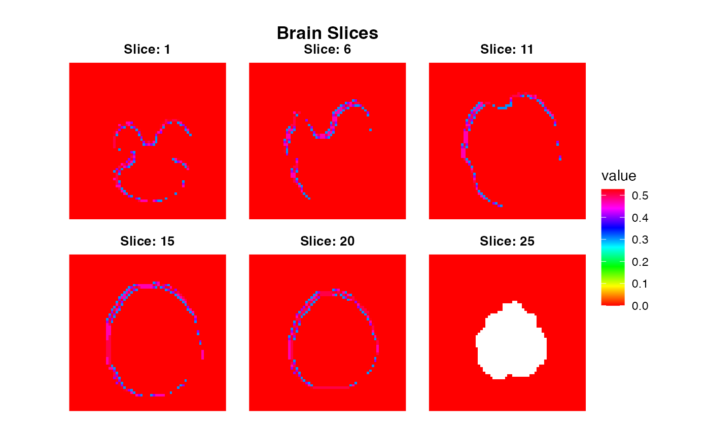
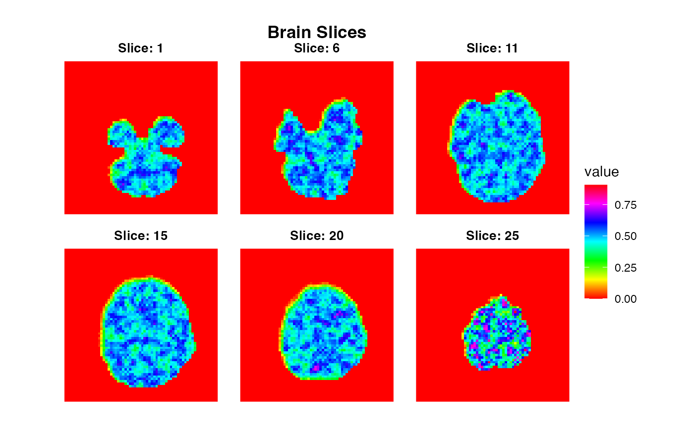

Pipelines
2018-07-02
pipelines.RmdPipelining operations using a functional approach
The neuroim2 packages provides a set of functions that allows one to split image data in various ways to processing data split into parts. By breaking a dataset up into pieces, we can also more easily parallelize certain operations.
Splitting an image into connected components
First we load in an example volume, assign it random values, and find its connected components with a threshold of .9
library(purrr)
library(ggplot2)
file_name <- system.file("extdata", "global_mask.nii", package="neuroim2")
vol <- read_vol(file_name)
mask.idx <- which(vol>0)
vol[mask.idx] <- runif(length(mask.idx))
comp <- conn_comp(vol, threshold=.9)
plot(comp$index, zlevels=seq(1,25,by=3), cmap=rainbow(255))
Now we want to find the average value in each of the connected components using the split_clusters function. Since conn_comp returns a ClusteredNeuroVol containing the cluster indices, we use that to split the original volume into a list of ROIVols and compute the mean over each one.
mvals <- vol %>% split_clusters(comp$index) %>% map_dbl( ~ mean(.))Suppose we want to compute the local standard deviation within a 4mm radius of each voxel. We can use the searchlight function to construct a list of spherical ROIs centered on every voxel in the input set.
sdvol <- vol %>% searchlight(radius=5, eager=TRUE) %>% map_dbl( ~ sd(.)) %>% NeuroVol(space=space(vol), indices=which(vol!=0))
plot(sdvol, cmap=rainbow(255))
Another thing we might to is compute the k nearest neighbors in each searchlight and replace the center voxel with the average intensity of its neighbors:
k <- 12
knnfvol <- vol %>% searchlight(radius=12, eager=TRUE) %>% map_dbl(function(x) {
ind <- order((x[x@center_index] - x)^2)[1:k]
mean(x[ind])
}) %>% NeuroVol(space=space(vol), indices=which(vol!=0))
plot(knnfvol, cmap=rainbow(255), zlevels=seq(1,25,by=3)) If we only need access to the searchlight coordinates (in voxel space), we can use the searchlight_coords function. Here, we simply replace the center voxel with the average of its neighbors in searchlight space:
avgvol <- vol %>% searchlight_coords(radius=12) %>% map_dbl(function(x) {
vals <- vol[x]
mean(vals[vals!=0])
}) %>% NeuroVol(space=space(vol), indices=which(vol!=0))
plot(avgvol, cmap=rainbow(255), zlevels=seq(1,25,by=3)) ## Mapping a function over each volume of a
## Mapping a function over each volume of a NeuroVec object